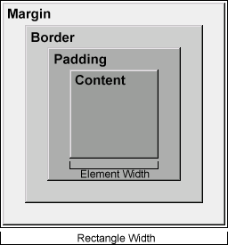
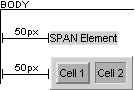

| ||
Dynamic HTML (DHTML) exposes measurement and location properties that you can use to change the size and position of HTML elements on your Web pages. When you understand what these properties are and how they affect elements on a Web page, you can achieve greater control over the appearance of your Web pages. For example, you can use these properties to design Web pages that are similar to documents in other applications, such as Microsoft® PowerPoint® or Microsoft® Word. This article includes the following sections, which explain how to use measurement and location properties to control the appearance of a Web page.
This documentation assumes that you are familiar with a client-side scripting language, such as Microsoft® JScript® (compatible with ECMA 262 language specification) or Microsoft® Visual Basic® Scripting Edition. You should also be familiar with the DHTML Object Model and cascading style sheets (CSS).
Measurement and location properties are available through the DHTML Object Model and as CSS attributes. You can use DHTML Object Model properties to programmatically set CSS attributes. Properties exposed through the DHTML Object Model return values based on how an element renders in the document. CSS attributes return values based on the preset values of other CSS attributes.
All CSS properties are exposed through the style object as of Microsoft Internet Explorer 4.0, and the runtimeStyle object as of Internet Explorer 5. You can use the currentStyle object, available as of Internet Explorer 5, to query the current value of a property.
Every visible element on a Web page occupies an absolute amount of space in the document. The amount of space occupied by an element is defined by the element rectangle or box. An element rectangle includes all of the layout and display properties plus any content. The following graphic represents the element rectangle for a generic element.

In the preceding graphic, the margin, border, and padding properties are shown surrounding the content of a generic element. "Element Width" represents the width of the element's content, and "Rectangle Width" represents the width of the content plus the additional space occupied by the layout properties. The height of an element and its layout properties can be represented similarly.
All visible HTML elements are either block or inline. A block element, such as the DIV element, typically starts a new line and is sized according to the width of the parent container. An inline element, such as the SPAN element, typically does not start a new line and is sized according to the height and width of its own content.
The size of an element, such as its height and width, comprises its measurements.
An element has layout when it is absolutely positioned, is a block element, or is an inline element with a specified height or width. The following table shows that nearly all inline and block elements have layout. The exception is an inline element that is neither absolutely positioned nor has its height or width specified.
| Block Element | Inline Element | |||
|---|---|---|---|---|
| Absolutely positioned | Not positioned | Absolutely positioned | Not positioned | |
| Height only is specified | Has layout | Has layout | Has layout | Has layout |
| Width only is specified | Has layout | Has layout | Has layout | Has layout |
| Height and width are specified | Has layout | Has layout | Has layout | Has layout |
| Neither height nor width is specified | Has layout | Has layout | Has layout | No layout |
An element with layout has specific measurements and can render the CSS layout attributes. Element measurements are useful when setting the location of other elements or creating specific document styles.
An element's location is the distance between the element and its parent, such as the top and left coordinates. An element's location is useful when moving one or more elements to relative or absolute coordinates within the document.
Height and width are the measurements used most frequently. Use the offsetHeight and offsetWidth properties to retrieve these measurements from any rendered inline or block element. To set these measurements, use the height and width attributes (or related properties). For a CSS attribute to be useful, you must set the attribute's value before retrieving it.
With Microsoft® Internet Explorer 4.0 and later, inline elements gain layout when the height or width are set. Inline elements with layout expose the same layout properties, such as border, margin, and padding, as block elements. The following example shows how layout attributes affect the appearance of a Web page when the height attribute is set on an element.
<!-- Styles render because this link has layout. --> <A href="http://msdn.microsoft.com/" STYLE="width: 150; border: 1 solid; padding: 10px; margin: 5px;"> MSDN Online </A> <!-- Styles do not render because this link has no layout. --> <A href="http://msdn.microsoft.com/" STYLE="border: 1 solid; padding: 10px; margin: 5px;"> MSDN Online </A>
When setting or retrieving an element's measurement and location values, you can use different length units to achieve a particular style. However, use length units consistently; otherwise, you will have to programmatically determine the value of an absolute length unit based on a relative length unit for every system. For example, you would have to convert inches to pixels on every machine that renders the document.
Layout properties contribute to the dimensions of an element and should be considered when determining the dimensions of the content. The content of an element is sized to any specified measurements minus the border and padding measurements. Because the DHTML and CSS properties do not provide a measurement of the content without its padding, the padding properties must be specifically queried to retrieve an accurate measurement. While you can use the offset and client properties to determine the size of the content, it is easier to subtract the size of the border and padding properties from the width of the element.
Consider the following DIV element:
<DIV ID="oDiv"
STYLE="padding: 10; width: 250; height: 250;
border: 2 outset; background-color: #CFCFCF;"
>
</DIV>
The specified height and width of the preceding DIV is 250 pixels. You can formulate the width of the content as follows:
oDiv.style.width - oDiv.style.borderWidth - oDiv.style.padding
However, since all three properties return variant data types, you must either convert the values to integers or use properties that return integer values. For example, to obtain the width of the element in pixels, you can use one of the following techniques in JScript:
var iWidth = oDiv.style.pixelWidth
var iWidth = parseInt(oDiv.style.width) (width is specified in pixels)
var iWidth = oDiv.offsetWidth
If the values of the border and padding properties are set in the same length units as the width property, you can convert the variant value to an integer. To determine the content dimensions, use the border and padding properties, or the client and padding properties, and the element dimensions. When retrieving border and padding values, use the borderWidth and padding properties, if the values are uniform on all sides of the element. Otherwise, you must specifically query the borderLeftWidth, borderRightWidth, paddingLeft, and paddingRight properties to obtain an accurate measurement.
For example, to obtain the width of the content in pixels, you can use one of the following techniques in JScript, where iWidth is based on one of the previous example techniques.
var iCntWidth = (iWidth - parseInt(oDiv.style.borderLeftWidth) - parseInt(oDiv.style.borderRightWidth) - parseInt(oDiv.style.paddingLeft) - parseInt(oDiv.style.paddingRight) )
var iCntWidth = (iWidth - parseInt(oDiv.style.borderWidth) - parseInt(oDiv.style.padding) )
var iCntWidth = (iWidth - (oDiv.offsetWidth - oDiv.clientWidth) - parseInt(oDiv.style.padding) )
The following example uses the first formula from the preceding section to move and resize a positioned element based on the content of another element.
<SCRIPT>
window.onload=fnInit;
function fnInit(){
var iWidth=oDiv.style.pixelWidth;
var iHeight=oDiv.style.pixelHeight;
var iCntWidth=(iWidth - parseInt(oDiv.style.borderLeftWidth)
- parseInt(oDiv.style.borderRightWidth)
- parseInt(oDiv.style.paddingLeft)
- parseInt(oDiv.style.paddingRight));
var iCntHeight=(iHeight - parseInt(oDiv.style.borderTopWidth)
- parseInt(oDiv.style.borderBottomWidth)
- parseInt(oDiv.style.paddingTop)
- parseInt(oDiv.style.paddingBottom));
var iTop=oDiv.offsetTop + parseInt(oDiv.style.borderTop)
+ parseInt(oDiv.style.paddingTop);
var iLeft=oDiv.offsetLeft + parseInt(oDiv.style.borderLeft)
+ parseInt(oDiv.style.paddingLeft);
oDiv2.style.width=iCntWidth;
oDiv2.style.height=iCntHeight;
oDiv2.style.top=iTop;
oDiv2.style.left=iLeft;
}
</SCRIPT>
<DIV ID="oDiv"
STYLE="padding: 20 5 10 10; width: 250; height: 250;
border: 10px outset; background-color: #CFCFCF;"
>
</DIV>
<DIV ID="oDiv2" STYLE="position: absolute; border: 2 inset;
background-color: #000099;"
>
</DIV>
The portion of Internet Explorer that displays the document is referred to as the client area. The location of the upper left-hand corner of the client area is 0 on the x-axis and 0 on the y-axis, or top and left, respectively. The BODY element is the first visible container in the document and is also the top-most offset parent. Therefore, the top and left coordinates of the BODY are both 0.
The distance between the element and its positioned or offset parent defines the element location. Internet Explorer exposes the element location when the document renders or when a change to the content forces the document to redraw. Understanding how elements are located within the document is key to determining and changing the location of an element.
Positioned elements render outside of the document flow. The document flow is the order of the elements after their measurements are calculated. Changing the measurements or location of positioned elements does not affect adjacent elements in the document flow, but it might affect children elements.
Nonpositioned inline and block elements render together and are part of the document flow. An element's location can change when the measurement of another element appearing earlier in the document flow changes. The measurement of an element changes when the content, layout, or font style of another element is updated after the document renders. Changing the measurements of a nonpositioned element changes the location of adjacent elements in the document flow. The location of a nonpositioned element also changes if you change its margin.
The following example shows how to retrieve the location of an inline element and how the measurement of another element affects the location of that element.
<SCRIPT>
function getLocation(){
alert("Left: " + oSpan.offsetLeft);
oSpan1.innerHTML="Changed content.";
alert("Left: " + oSpan.offsetLeft);
oSpan1.innerHTML="This is some dynamic content.";
}
</SCRIPT>
<BODY>
<SPAN ID="oSpan1">This is some dynamic content.</SPAN>
<SPAN STYLE="background-color: #CFCFCF;" ID="oSpan">
This content won't change, but this element's location will change.
</SPAN>
<INPUT TYPE="button" VALUE="Locate Second Element" onclick="getLocation()">
</BODY>
Although you can retrieve the top or left location of any element that renders, the values of these locations are relative to the positioned or offset parent. In many cases, the offset parent of an element is the BODY element. The offsetParent property retrieves a reference to the container object that defines the offsetLeft and offsetTop properties for the element. The offset properties return values in pixels relative to the parent, and you cannot always rely on a single value when determining the distance between two elements.
The following image depicts the offsetLeft values of a SPAN element and a TABLE element. The offset value for both elements is 50 pixels. However, if you query the offset value of a table cell, the offsetLeft property returns only 3 pixels, because TABLE is the offset parent of the TD element (Cell 1). To determine the distance from the table cell to the edge of the screen, add the two values together.

Certain elements, such as the TABLE element, expose their own object model and a specific set of properties, such as the cellPadding property and the cellSpacing property. From the currentStyle object, you can retrieve the current value of the cellPadding property through the padding property. You must retrieve the cellSpacing property directly from the TABLE element.
Determining the distance between any nested element and its offset parent, such as the BODY element, might require you to include the location of the offset parent. For example, the top and left locations of a TD element return the distance between the cell and the offset parent, which is the TABLE element. To determine the distance between a nested element and the BODY element, you must walk up the document hierarchy and add the left location values of all the offset parents between the two elements.
The following example shows how to programmatically retrieve the absolute distance between a TD element and the BODY element.
<SCRIPT>
function getAbsoluteLeft(oNode){
var oCurrentNode=oNode;
var iLeft=0;
while(oCurrentNode.tagName!="BODY"){
iLeft+=oCurrentNode.offsetLeft;
oCurrentNode=oCurrentNode.offsetParent;
}
alert("Left: " + oNode.offsetLeft + "\nAbsolute Left: " + iLeft);
}
</SCRIPT>
<BODY>
<INPUT
TYPE="button"
VALUE="Get Absolute Left"
onclick="getAbsoluteLeft(oCell)">
<TABLE CELLSPACING="2">
<TR><TD ID="oCell">Cell 1</TD></TR>
</TABLE>
</BODY>
An absolutely positioned element's measurements are first defined by any specified measurement properties, such as height or width, and then by its content. This is true for block and inline elements. However, a relatively positioned element retains its block or inline measurements unless otherwise specified.
The following example shows that the measurements of a block element and an inline element are the same when the position attribute is set to absolute.
<DIV STYLE="background-color: #CFCFCF; position: relative; top: 10;"> Text </DIV> <SPAN STYLE="background-color: #CFCFCF; position: absolute; top: 30;"> Text </SPAN>
You can use the same procedure to set or retrieve the measurements of positioned elements and nonpositioned elements.
Measurement and location values do not have to be static integers. They can be scripted values based on distances and dimensions of other elements, expressed lengths, as in more traditional media, or equations. When working with several elements, you can use the measurement of one element to set the location of another.
You can use the measurement and location properties discussed in this overview to construct more complex creations. For example, to center an element within its container, set its left coordinate to the sum of one-half the width of its container minus one-half the width of the element. The following example shows this syntax.
<SCRIPT>
function center(oNode){
var oParent=oNode.parentElement;
oNode.style.left=oParent.offsetWidth/2 - oNode.offsetWidth/2;
}
</SCRIPT>
<DIV
ID="oDiv"
onclick="center(this)"
STYLE="position: absolute;">
Click Here To Center
</DIV>
Expressions are formula-derived values. You can use expressions to continually update property values, as of Internet Explorer 5. In the preceding example, the element is centered once, but does not remain centered if the browser window is resized. To preserve a particular layout, use a formula rather than a static value.
Use the setExpression method to add expressions to CSS attributes and DHTML properties. The following example shows how to center an element using an expression rather than a static value.
<SCRIPT>
function center(oNode){
oNode.style.setExpression("left","getCenter(this)");
}
function getCenter(oNode){
var oParent=oNode.parentElement;
return (oParent.offsetWidth/2 - oNode.offsetWidth/2);
}
</SCRIPT>
<DIV
ID="oDiv"
onclick="center(this)"
STYLE="position: absolute;">
Click Here To Center
</DIV>
While the DHTML Object Model provides an easy way to obtain the current dimensions and location of an element, you must use CSS to set these values for most elements. Except for elements that expose height and width properties, such as IMG and TABLE, you can use the various CSS attributes to set the size of an element. While many properties return values in pixels, you can use some CSS properties with specific length units, such as inches or centimeters.
For example, if an H1 element has top and left positions of 2 inches, the offsetTop and offsetLeft properties return approximately 190 pixels, depending on the screen resolution. Since the top and left properties return a string value of 1in, you can use the posTop and posLeft properties to increment or decrement the location in inches rather than pixels. The posTop and posLeft properties use the same length units as their counterpart CSS properties, top and left.
The following example moves the H1 element 1 inch every time the user clicks the element.
<SCRIPT>
function moveMe(){
// Move the object by one inch.
oHeader.style.posLeft+=1;
oHeader.style.posTop+=1;
}
</SCRIPT>
<H1 ID="oHeader"
STYLE="position: absolute; top: 1in; left: 1in;"
onclick="moveMe()">
Header
</H1>
When moving elements to specific locations in the document, it is sometimes necessary to account for the different properties of the element rectangle. Height and width values include border and padding measurements, so moving one element to the visible corner of another element is relatively easy using the offset properties and techniques described in the preceding example. However, when positioning an element at a specific point in the content of another positioned element, you must include the size of the padding and border. You can use either the client properties or the padding and border properties to establish a location within the content of an element. You can also use a TextRectangle to establish a location.
The following example shows three different ways to position an element within the content of another element. First, CSS pixel, border, and padding properties are used to move an element to the content within a positioned element. Next, DHTML offset and client properties are used to move an element within the content of a positioned element without accounting for the padding. And finally, a TextRectangle is used to establish the position of the element.
Sample Code
<SCRIPT>
function fnMove1(){
// Method 1: Use only CSS properties
var iTop1=oDiv.style.pixelTop +
parseInt(oDiv.style.borderTopWidth) +
parseInt(oDiv.style.paddingTop);
var iLeft1=oDiv.style.pixelLeft +
parseInt(oDiv.style.borderLeftWidth) +
parseInt(oDiv.style.paddingLeft);
oMarker.style.top=iTop1;
oMarker.style.left=iLeft1;
}
function fnMove2(){
// Method 2: Use DHTML properties.
var iTop2=oDiv.offsetTop + oDiv.clientTop;
var iLeft2=oDiv.offsetLeft + oDiv.clientLeft;
oMarker.style.top=iTop2;
oMarker.style.left=iLeft2;
}
function fnMove3(){
// Method 3: Use DHTML, CSS, and a TextRectangle.
var aRects=oDiv.getClientRects();
var oRect=aRects[0];
var oBnd=oDiv.getBoundingClientRect();
oMarker.style.top=oBnd.top +
parseInt(oDiv.style.paddingTop) +
parseInt(oDiv.style.borderTop);
oMarker.style.left=oBnd.left +
parseInt(oDiv.style.paddingLeft) +
parseInt(oDiv.style.borderLeft);;
}
</SCRIPT>
<DIV ID="oDiv"
STYLE="position: absolute; top: 150; left: 50; border: 10 outset;
padding: 10; width: 250; height: 250; background-color: #EFEFEF;"
>
Move marker here.
</DIV>
<SPAN ID="oMarker"
STYLE="top: 200; left: 200; position: absolute;
border: 2 outset; background-color: #CFCFCF;"
>
Marker
</SPAN>
<INPUT TYPE="button" VALUE="CSS" onclick="fnMove1()">
<INPUT TYPE="button" VALUE="DHTML" onclick="fnMove2()">
<INPUT TYPE="button" VALUE="TextRectangle" onclick="fnMove3()">
With Internet Explorer 5 and later, you can use DHTML expressions and the runtimeStyle and currentStyle objects to create more advanced measurement and location formulas. Expressions use formulas to return a possible value for any DHTML or CSS read/write property. To query the current value of a property, use the currentStyle object instead of the style object. To temporarily set a property value, use the runtimeStyle object instead of the style object. When a property value is cleared from the runtimeStyle object, the value reverts to the original property value set on the style object.
Expressions, DHTML, and CSS provide a robust model for delivering information to your audience. The following example uses these technologies to animate a list when the document loads. The margin-left attribute includes an expression that returns a value based on a variable.
Once the document loads, the setInterval method is invoked to increment the variable until it reaches a target value. The amount is determined by the marginLeft property of a particular list item's sibling, available from the previousSibling property. When the variable increments, the recalc method is invoked with the true parameter, because the margin-left attribute is not implicitly dependent on the variable. Adding the marginLeft value of the sibling list item causes the entire list to cascade.
<STYLE>
LI {margin: expression(fnTabIt(this));}
</STYLE>
<SCRIPT>
window.onload=fnInit;
// Starting marginLeft increment.
var iDML=0;
// Target marginLeft increment.
var iDMLTarg=30;
// Increment modifier.
var iDMLMod=.25;
// Animation speed in milliseconds.
var iDMLSpeed=50;
var oInterval;
function fnTabIt(oNode){
var oPSib=oNode.previousSibling;
if(oPSib!=null){
var iML=0;
if(oPSib.style.marginLeft!=""){
iML=parseInt(oPSib.style.marginLeft);
}
return ((iDML*iDMLMod) + iML);
}
else{
return 0;
}
}
function fnAdjustTab(){
if(iDML<iDMLTarg){
iDML++;
document.recalc(true);
}
else{
iDML=iDMLTarg;
window.clearInterval(oInterval);
}
}
function fnInit(){
oInterval=window.setInterval("fnAdjustTab()",iDMLSpeed);
}
</SCRIPT>
<UL>
<LI>Item 1
<LI>Item 2
<LI>Item 3
<LI>Item 4
<LI>Item 5
<LI>Item 6
<LI>Item 7
<LI>Item 8
<LI>Item 9
<LI>Item 10
</UL>
Click the following Show Me button for an interactive demonstration of the measurement and location properties. When you select a pair of properties, the dimensions and distances are displayed using indicators created with the same techniques discussed in this overview.
The following lists contain links to overviews and references that are associated with the DHTML and CSS measurement and location properties.
Did you find this topic useful? Suggestions for other topics? Write us!
© 1999 Microsoft Corporation. All rights reserved. Terms of use.